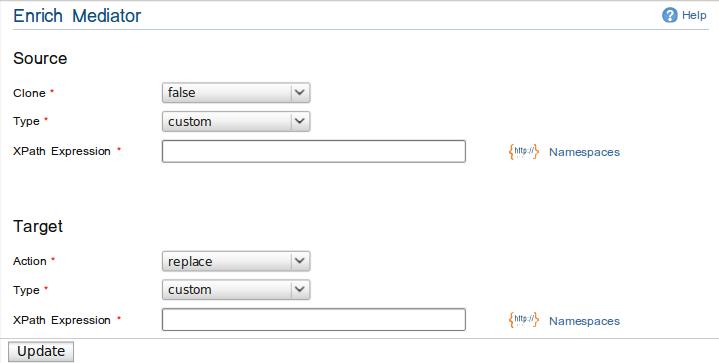
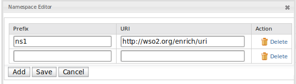

Enrich Mediator
Enrich Mediator can process a message based on a given source configuration and then
perform the specified action on the message by using the target configuration.
It basically gets an OMElement using the configuration specified in the source
and then modify the message by putting it on the current message using the configuration in the target.

Enrich Mediator Screenshot
You have the following configurations under the Enrich mediator.
-
Source Configuration
-
Clone : By setting the clone configuration, the message can be cloned or else use as a reference during the enriching.
The default value for clone is false.
-
Type : Specifies that the type that the mediator use from the original message to enrich the modified message that pass through the mediator.
-
Custom : Custom XPath value
If there are any namespaces involved in the XPath expression, you can specify it in the Namespace
Editor.

Namespace Editor Screenshot
-
Envelope : Envelope of the original message will be used for enriching.
-
Body : Body of the original message will be used for enriching.
-
Property : Specifies a property.
-
Inline : Specifies an inline XML value
-
Target Configuration
-
Action : By specifying the action type the relevant action can be applied to outgoing message.
-
Replace : Replace the xml message based on the target type specified on the target configuration.
-
Child : Adding as a child of specified target type.
-
Sibling : Adding as a sibling of specified target type.
-
Type : Specifies that the type of enriching the outgoing message.
-
Custom : Custom XPath value. (Also possible to add namespaces as shown in the source configuration)
-
Envelope : adding the specified source type as the Envelope of the modified message
-
Body : adding the specified source type as the body of the modified message
-
Property : specify as a property